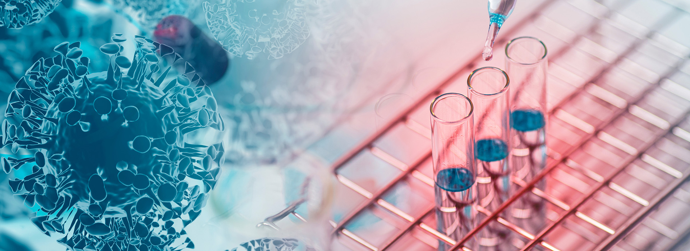

M WANG Lab

Human genetics

Welcome to our website! We are a group of researchers working in the field of statistical genetics and bioinformatics. We pursue solving problems by methods with simple and elegant design, applicable and generalizable to a wide range of real-life scenarios.
In human genetics, our interests of research is downstream association testing and complex disease prediction. We develop methods with improved power by leveraging inherit structure of data. For example, the W-test for epistasis testing carries a data-set adaptive probability distribution for enhanced association testing power; and in phenotype prediction, we view the disease probability of individuals as being composed of a spectrum of risk liability that could be further calibrated in subpopulations.
In virus genetics, we thrive to introduce statistical genetics methods into this field. We identify key mutations influencing population epidemics statistically. We developed the g-measure, a summary statistics to reflect the overall genetic mutation activities of a pathogen in host population. Most excitingly, we find that patterns of mutation could be used to infer evolutionary trend, which leads to the beth-1 framework to predict influenza vaccine strain for the coming epidemic season. Our quest and exploration in virus genome has generated many concurrent projects including methods for vaccine effectiveness prediction by genome analysis, probabilistic profiling of substitutions events in genome, structured-based codon optimization method, epistasis testing for co-mutations, etc. We take great excitement to learn virology and immunology towards developing statistical and bioinformatics approaches to improve understanding of virus evolution and vaccinology.
Our group is homed in the JC School of Public Health and Primary Care, Faculty of Medicine, the Chinese University of Hong Kong, Shatin, Hong Kong SAR. We have a wonderful group of collaborators in the medicine faulty and elsewhere. By integrating bioinformatics, clinical insights and biomedical science, we work together towards creating new knowledge in human genetics, virus evolution, and vaccinology.